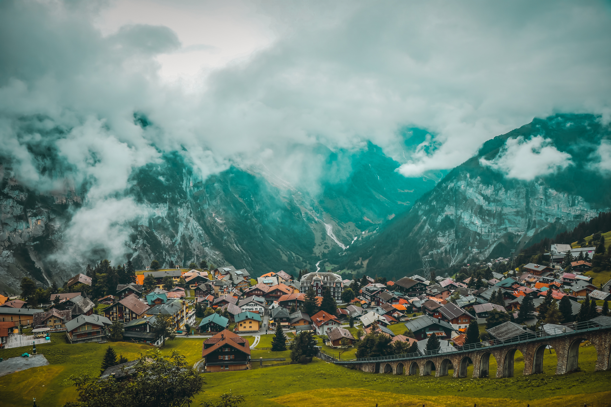
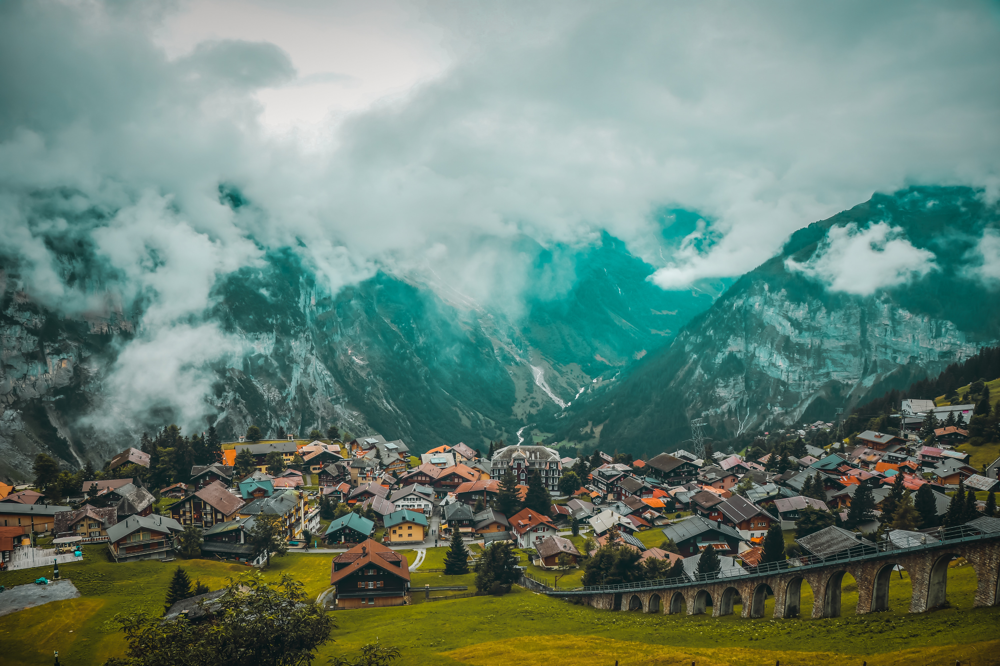
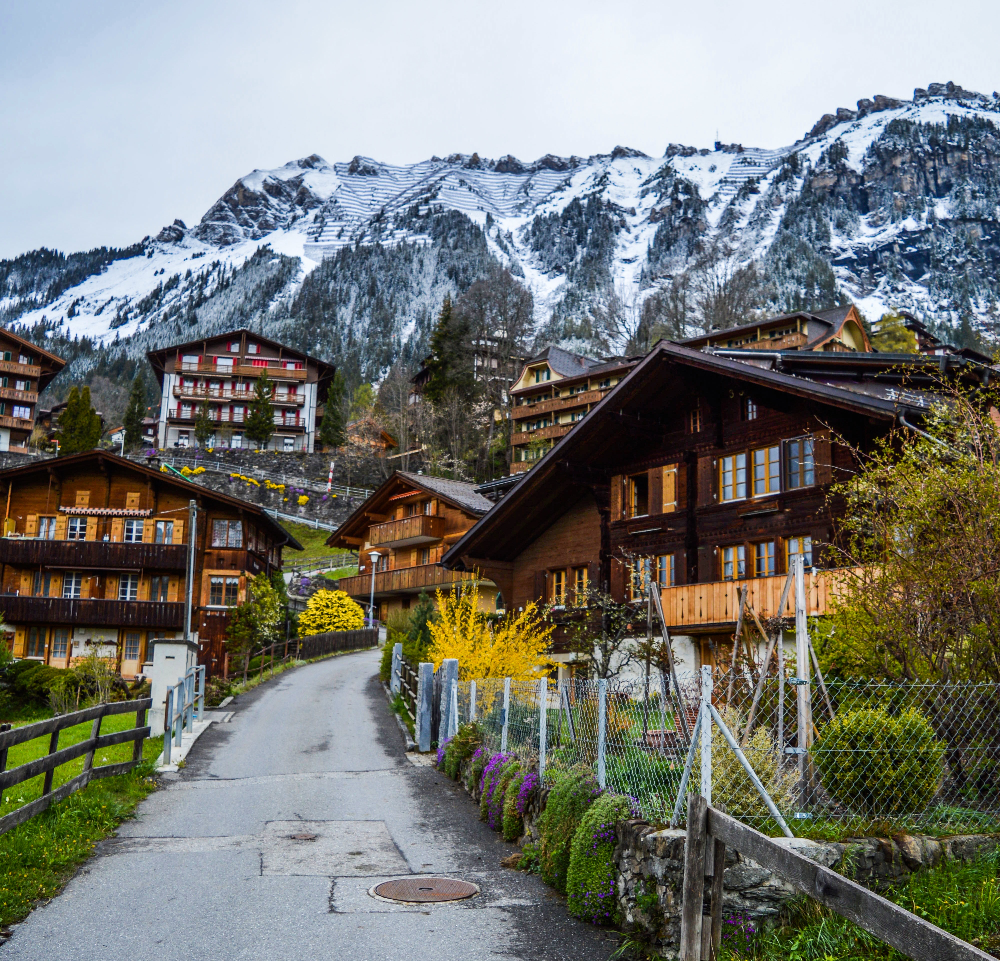
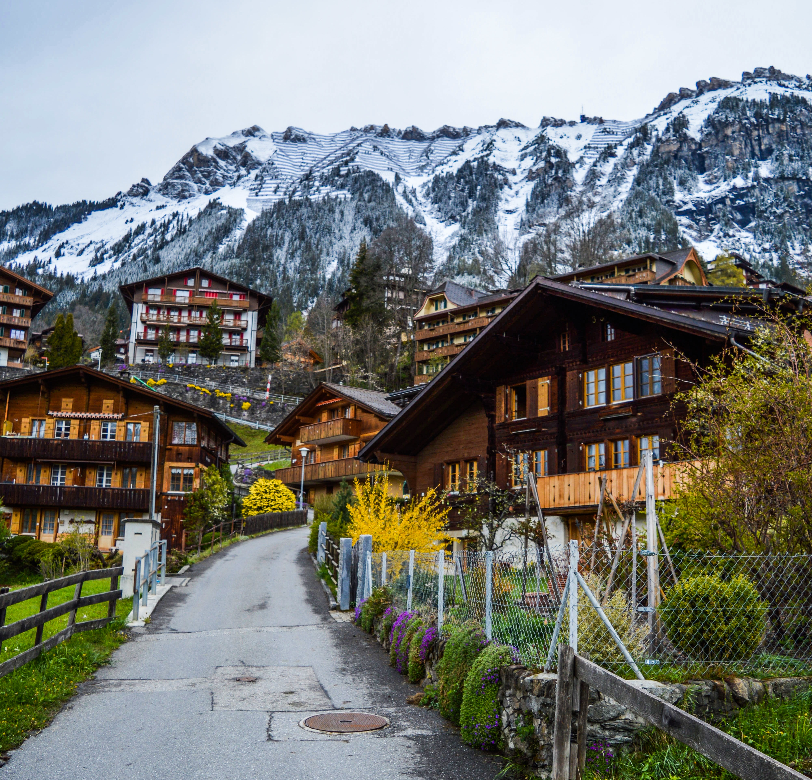

Switzerland boasts an extraordinary variety of landscapes and habitats, ranging from the Central Plateau to the high peaks of the Alps. Its abundant natural ecosystems like the Alps, wetlands and forests are in close proximity to urban centres and are a particular feature of the Swiss landscape.
One of the world's most mountainous countries, Switzerland is a land of staggering peaks, sprawling glaciers, vast alpine meadows, and a rich cultural heritage that dates back millennia. Switzerland is home to 10850 named mountains.
 


The water in Switzerland is known for its clear and blue appearance. This is due to a combination of factors, including the glacial origin of many of the country's lakes and rivers, which results in very low levels of sediment and pollutants. Additionally, the high altitude and the surrounding mountains can cause the water to reflect more sunlight, giving it a bright blue appearance. Additionally, Switzerland has strict water protection laws which help to keep the water clean


Their compact size means that Swiss cities embody quality of life and urban flair. You'll find well-preserved historical centres, modern architectural masterpieces and a vast number of green spaces all within easy reach.
 

On a winter trip to Switzerland, you can expect chilly conditions below freezing, lasting from December through February. Naturally, skiing is a popular activity in Switzerland in the winter, and, as it's the peak season to visit the country